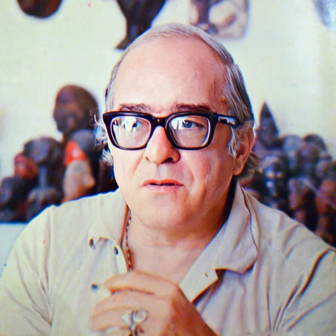

Vinicius de Moraes

Mais conhecido como "poetinha", Vinicius de Moraes foi um escritor, cantor e compositor insuperável na cultura brasileira.Uma das mais importantes vozes da sua geração, o mestre da Bossa Nova continua sendo amado pelo público, sobretudo graças ao seu trabalho poético.
Com um olhar atento ao mundo ao redor, os seus versos abordavam temáticas políticas e sociais, mas também falavam de emoções e relacionamentos. Um verdadeiro apaixonado, o poeta se casou 9 vezes e escreveu inúmeros sonetos de amor que continuam arrebatando os corações de leitores de todas as idades.